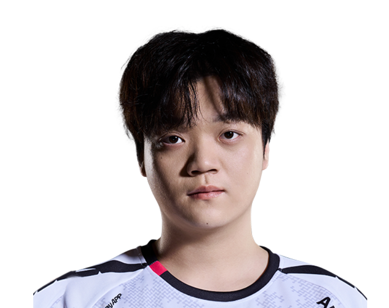

TYLOO / 张震
Scales.
ALL IN. EVERY ROUND.ViperScales / 张震
Scales / TYL
ONE NAME.EVERY ROUND.ALL IN.
张震，TYLOO。
从每次选下英雄，到每次站上赛场。
Scales / 赛场影像MOMENTS
MOMENTS
THAT MATTER.
Scales.
TYLOO
每一瞬间，都是比赛的一部分。
Riot Games / 官方赛场影像
Scales / 职业英雄池
DIFFERENT AGENTS.
SAME PLAYER.
从最熟悉的英雄，看到每一种打法。蝰蛇
Viper.
44% 全英雄使用占比
63职业出场地图
211.6平均战斗评分 ACS
1.10击杀 / 死亡 K:D
992总击杀
114首杀
VLR 全时期职业数据 · 2026-11-02 快照 · 出场单位为地图，使用占比不是胜率。查看原始统计 ↗
Scales / 比赛记录ONE PLAYER.
ONE PLAYER.
EVERY ROUND.
143职业地图
2,003总击杀
0.99全英雄 K/D
Champions 2026 Group Stage ⋅
Elim (C)
TYL / TL1 : 2+
Champions 2026 Group Stage ⋅
Opening (C)
TYL / G20 : 2+
VCT 26: CN Stage 2 Playoffs ⋅
GF
TYL / JDG3 : 1+
VCT 26: CN Stage 2 Playoffs ⋅
LBF
TYL / BLG3 : 0+
VCT 26: CN Stage 2 Playoffs ⋅
LR3
TYL / NOVA2 : 0+
最近已收录系列赛；生涯总计由全英雄表求和，K/D 为总击杀除以总死亡。

下一位 / TYL 阵容